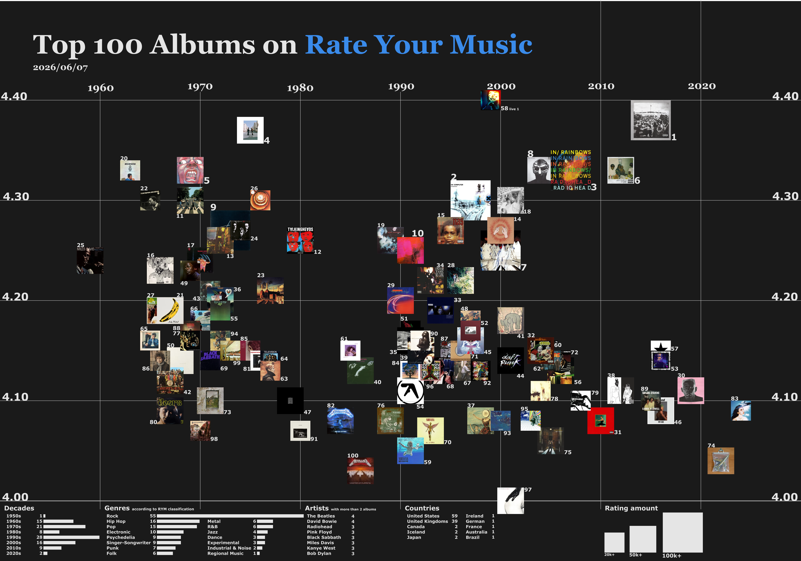

Rate Your Music Top 100 專輯統計

檢視或下載此圖片{kind=link}
關於
如果讓所有人一起選出最好的專輯，會是怎麼樣？
以上這張圖統計了以網友評分為基礎的樂評網站Rate Your Music (RYM)上排名最高的100張專輯，內容取於2026年6月7日，橫軸表示專輯發行年份，縱軸表示專輯的平均評分，專輯大小表示其評分總數，從兩萬到十餘萬不等，只要找到專輯封面的中心點，往兩軸對過去，就能知道專輯的年份和評分了。由於RYM上的專輯排名機制考量了評分數量等因素，所以不是字面數字越高排名就越前面。
Fishermans的98.12.28 男達の別れ是唯一的現場專輯，事實上也是評分本身最高的專輯，然而RYM的排名機制中現場專輯會減權計算，且排名受到評分人數較少影響，因此僅排在58位。原聲帶專輯也會減權計算，這是C418的Minecraft: Volumn Alpha（遊戲原聲帶，平均評分4.20）、Prince and The Revolution的Purple Rain（音樂電影原聲帶，平均評分4.15）沒在榜上的緣故。
年代
最高分的100張專輯中，1990年代和1970年代幾乎占了一半。1965年到1975年經典搖滾時期的名專幾乎都有上榜，範圍涵蓋民謠搖滾、硬式搖滾、迷幻搖滾等，接著以Telvision為首出現幾張後龐克專輯；1980年代的專輯非常少，主要是因為當時流行的華麗搖滾、舞曲流行都不太合RYM網友的品味，上榜的以鞭擊金屬及另類搖滾為主；1990年代的專輯則非常多，因為當時正逢另類搖滾和嘻哈音樂的崛起，而其中具反叛性、實驗性的專輯正式RYM網友的最愛；2000年代和2010年代大多數專輯的分數開始下滑，不過分別代表另搖和嘻哈的Radiohead和Kendrikck Lamar卻得到特別高分。2020年代僅有兩張專輯，一方面是音樂幾乎被「發明」完了，主流流行樂的全面宰制壓縮了音樂的創新風潮，一方面是RYM用戶（多數樂評人亦然）貴古賤今的結果。
最多專輯上榜的年份是1991年，共有6張，且包含另類搖滾、後搖滾、嘻哈、IDM等流派的重要專輯。約以此年為界，在此之前的專輯都已是音樂界公認經典，也都極具影響力；在此之後除了一些取得主流成功的專輯外，還包含了大量小眾、獨立的邪典（cult classic）專輯。2020年代上榜的兩張專輯Ants from Up There和Imaginal Disk的多數歌曲在YouTube上僅有數十萬至百萬觀看，甚至如果有人同時喜歡這兩張，大概就能猜到其為RYM或AOTY（另一個樂評網站）的使用者了。
類型
這些類型（gerne，或稱流派、曲風）是基於RYM的主要類型分類，而RYM決定專輯類型的方式是多數決，且一張專輯經常有2、3個主要類型。在這100張專輯中搖滾樂佔了超過一半（龐克、金屬也同時算在搖滾樂中），其次是嘻哈音樂。比較值得注意的是，搖滾樂中有很多另類搖滾專輯（90年代以降），且7張龐克專輯全部屬於後龐克，此外相比滾石五百大專輯、Apple Music百大專輯等榜單，節奏藍調在RYM百大專輯的占比很低。
國家
美國和英國毫無意外地佔據了絕大多數專輯，但就人口比例而言英國的成就顯然較大。加拿大的G!YBE、冰島的Bjork 、日本的Fishermans各有兩張專輯上榜；巴西擁有南美唯一一張專輯Clube da Esquina，同時也是唯一類型屬於區域音樂的專輯。非英語的專輯包含4張器樂爵士專輯、葡萄牙語的Clube da Esquina；Fishermans的專輯跨日語與英語、G!YBE則跨英語與魁北克法語
藝人
除了這些藝人外，有非常多組音樂人也有兩張專輯上榜
-
本圖將在未來某個時候更新，查看本週最新的榜單請至RYM上的Best albums of all time